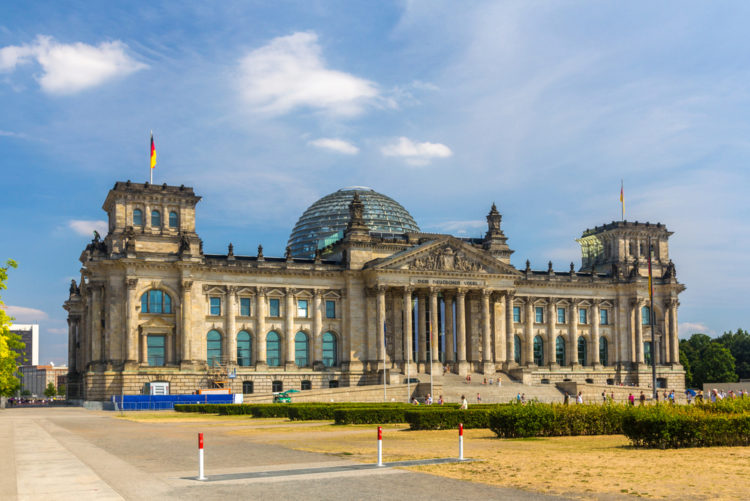
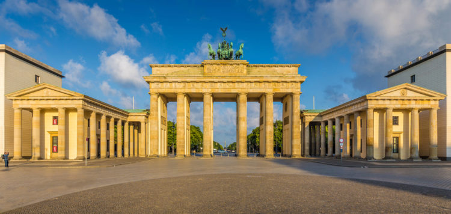
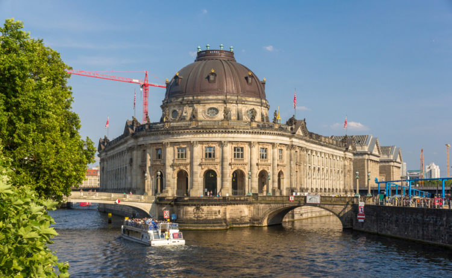
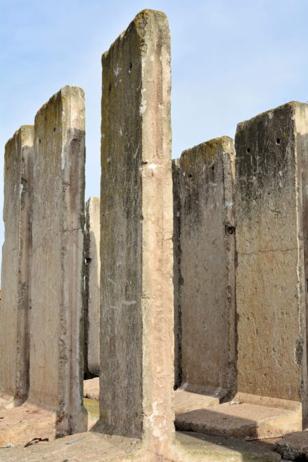
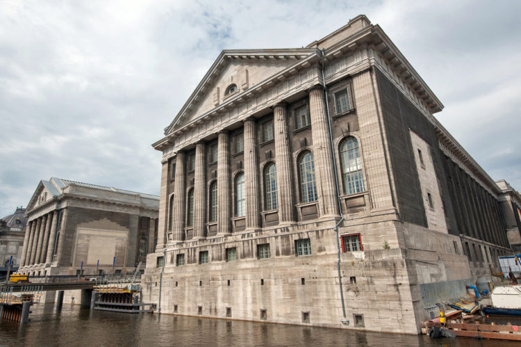
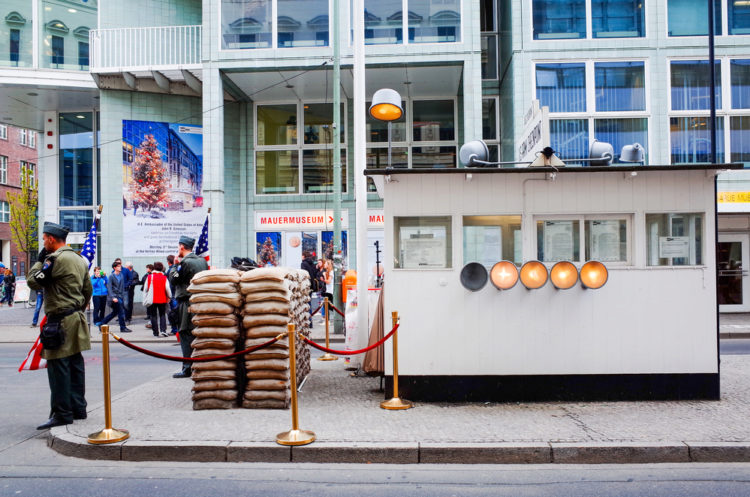
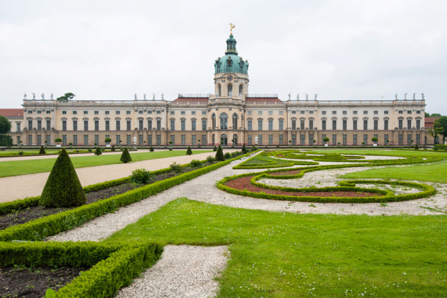
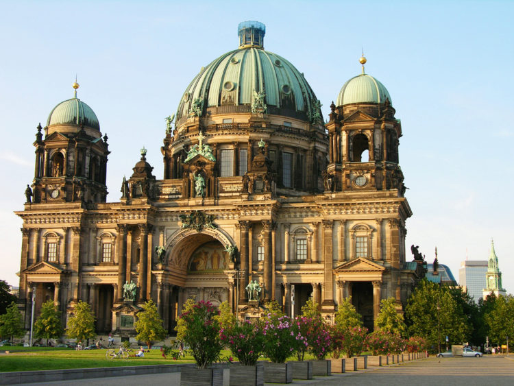
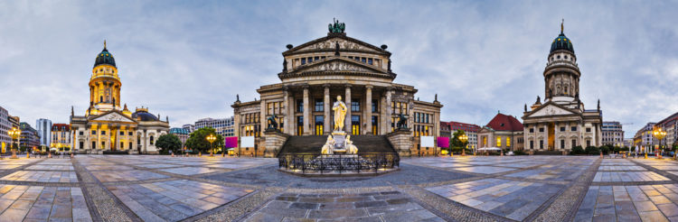
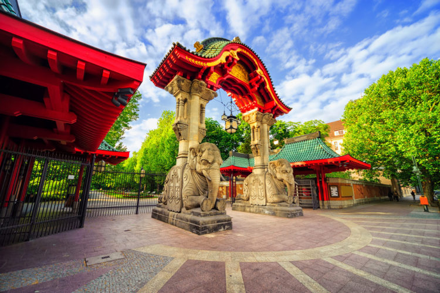

Тур в Берлин

Столица Германии пользуется заслуженной популярностью у туристов со всего мира. Берлин ежегодно посещает более 25 миллионов гостей. Достопримечательности Берлина привлекают самых разных путешественников, ведь здесь каждый найдет по-настоящему интересное место в соответствии с личными предпочтениями. Впечатления и фотографии от поездки в центр объединенной Европы расширят кругозор и познакомят с культурным наследием великой страны. Что посмотреть в Берлине, если вы путешествуете без сопровождения гида, подскажет краткий обзор памятников культуры и мест проведения досуга.
Что посмотреть в Берлине в первую очередь?
1. Здание Рейхстага
Это, пожалуй, самое узнаваемое место из всех достопримечательностей Германии. Большинство экскурсий по современному Берлину начинаются здесь. Величественный дворец немецкой государственности, построенный в 1894 году, стал свидетелем всех исторических событий, сформировавших судьбу современной Германии. Здание немецкого Парламента не раз подвергалось разрушениям, оно сильно пострадало при пожаре в 1933 году, а в результате бомбардировок в 1945 году было практически разгромлено. Однако, после нескольких реконструкций сооружение обрело первоначальный облик, также был восстановлен грандиозный стеклянный купол, где расположена уникальная смотровая площадка, доступная для туристов. Отсюда в ясную погоду можно увидеть окрестные достопримечательности Берлина во всей красе. Чтобы посетить здание Парламента ФРГ, необходимо предварительно пройти регистрацию на официальном сайте Рейхстага и предъявить полученные данные на входе. Без этой формальности войти и осмотреть с экскурсией помещение изнутри не получится.
2. Бранденбургские ворота
Классическая арка Бранденбургских ворот по замыслу архитекторов являет собой Врата мира, но по иронии судьбы через них немецкие солдаты отправлялись воевать. Четверка лошадей, управляемая богиней победы, венчает двенадцать колонн. В таком виде Бранденбургские ворота стали символом объединенной Германии и были растиражированы на миллионах открыток, разлетевшихся по всему миру. Туристы, размышляющие, что посетить в Берлине, направляются через эти ворота к знаменитой Липовой аллее и продвигаются по ней, осматривая исторические места. На фотоснимках этой части города Бранденбургские ворота обязательно попадают в кадр, привнося в пейзаж колорит немецкой столицы.
3. Музейный остров
На острове посреди реки Шпрее расположились 5 берлинских музеев. Этот исторический комплекс начал свое развитие от первого построенного в 1830 году здания, названного Старым музеем, в котором представлена экспозиция античных статуй, оружия и древнегреческих украшений. Позднее был построен и Новый музей, где выставлены образцы папирусов и экспонаты древнеегипетского искусства. Старая национальная галерея, открытая в 1876 году, будет интересна любителям импрессионизма, здесь же выставлены работы прославленного берлинца Менцеля, также можно полюбоваться римскими фресками. Позже, в начале XX века, для посетителей открыл свои двери Музей Боде, представляющий искусство Византии и скульптуру Германии и Италии периода раннего Средневековья. В 1930 году был основан Пергамский музей, экспонирующий исламское искусство и образцы культуры Передней Азии. Попасть на Музейный остров можно по пешеходному мосту, который прозвали мостом из настоящего в прошлое.
4. Берлинская стена
Уродливое ограждение из бетона высотой более трех метров, опутанное колючей проволокой, протяженностью около 160 км отделило Западный Берлин от Демократической Германии в 1961 году и простояло 28 лет, разделяя немецкий народ на два враждебных государства. В ноябре 1989 года после упрощения пограничного режима между ФРГ и ГДР Берлинская стена перестала быть символом разъединения страны, ее расцветили граффити уличных художников, а обломки разрушаемого сооружения разошлись по всему миру. В настоящее время восстановленный фрагмент стены длиной около 800 м по Бернауэрштрассе стал памятником единения жителей всей Германии, которое невозможно разрушить искусственными препятствиями. Достопримечательности Берлина включают в свой список стену, как обязательный к посещению памятник закончившейся «холодной войне». Единый Берлин развивается и хорошеет, а остатки стены напоминают о временах «железного занавеса» и о том, что из исторических событий необходимо извлекать уроки.
5. Пергамский музей
Что посмотреть в Берлине, чтобы не пожалеть об оплаченных входных билетах? Конечно, Пергамон! Самый посещаемый музей Германии был назван в честь своего главного экспоната – Пергамского алтаря, найденного при раскопках на землях одноименного царства, которое существовало в 290-120 годах до н.э. на территории современной Турции (ныне город Бергама). Кстати, турецкое правительство периодически заявляет о желании вернуть этот артефакт на исконную территорию. Кроме Пергамского алтаря Зевса, в музее представлены: богатейшие коллекции античного искусства с территории Греции и Римской империи; экспозиция предметов культуры из Передней Азии; огромное собрание предметов исламского искусства. Посмотреть архитектурные фрагменты османских дворцов, ворота римского рынка, мозаики, ассирийские рельефы, клад Трои, вавилонские врата Иштар, коллекцию восточных ковров можно в одном месте – в Пергамоне.
6. Чекпойнт Чарли
Контрольно-пропускной пункт Берлинской стены между советской и союзнической зонами представляет собой невзрачную будку, но в то же время является известным местом, занесенным в достопримечательности Берлина и символизирующим противостояние идеологий. Через этот КПП передвигались военные и дипломаты. Именно здесь в 1961 году стояли советские танки, к счастью, не открывшие огонь. Свое имя КПП получил благодаря алфавитной кодировке американцев (А – альфа, В – браво, С – чарли), этими тремя контрольными пунктами пользовались граждане США. Неподалеку от чекпойнта расположен музей Берлинской стены, где многочисленные экспонаты повествуют о том, как берлинцы пытались преодолеть заграждения в обход официальных пунктов прохода с Востока на Запад.
7. Дворец Шарлоттенбург
Королевская резиденция, возведенная в конце XVII века, получила свое название в честь Софии Шарлотты, супруги прусского курфюрста Фридриха I. Изысканный дворцовый комплекс окружен великолепным парком в регулярном стиле. Элегантные лестницы, оранжереи, Карповый пруд, разнообразные статуи, изящные мостики, вековые липы и цветники создают неповторимую атмосферу, где так любят прогуливаться и заниматься спортом берлинцы. Свободный доступ в парк дает возможность наслаждаться ухоженными ландшафтами, в тенистых аллеях можно укрыться от суеты большого города и послушать пение птиц. Дворец-музей открывает свои двери для экскурсантов, чтобы ознакомиться с роскошными интерьерами, убранством королевских покоев, обширной коллекцией фарфора. Во время Второй Мировой войны дворцово-парковый ансамбль Шарлоттенбурга подвергся серьезным разрушениям, но усилиями реставраторов удалось восстановить красоту и своеобразие этого объекта культурного наследия для всех, кого интересуют исторические достопримечательности Берлина.
8. Берлинский кафедральный собор
Величественный протестантский храм возводили 11 лет в конце XIX – начале XX века. Ему отводилась роль главной церкви всех лютеран. Барочное здание собора торжественно возвышается на Музейном острове, а внутреннее убранство не подавляет, как в большинстве католических соборов, а побуждает внимательно разглядеть детали скульптур, витражей, картин с сюжетами из библии. В усыпальнице собора покоятся представители династии Гогенцоллернов. Творение известного мастера Зауэра – великолепный орган – наполняет пространство собора звуками музыки. В соборе регулярно проводятся органные концерты, знатоки отмечают великолепную акустику в помещении. Посетители храма нередко поднимаются на смотровую площадку под куполом, чтобы лишний раз убедиться, что посмотреть в Берлине на окрестные виды можно с разных точек обзора.
9. Жандарменмаркт
Жандарменмаркт по праву называют самой красивой площадью столицы Германии. Три шедевра архитектуры, расположенных по периметру, – Концертный зал, Французский и Немецкий соборы, также записанные в достопримечательности Берлина, – достойно обрамляют пространство, где начиная с XVIII века шла рыночная торговля. Сначала это был Липовый рынок, затем Новый, и уже потом Военный рынок (в честь расквартированной неподалеку кавалерийской части). Жандармы, упомянутые в названии, в данном случае не надзиратели за порядком, а просто представители армии. В зависимости от времени года на Жандарменмаркт проводят рождественские ярмарки, арт-перфомансы, выставки, акции. Здесь сосредоточены солидные рестораны и питейные заведения. В общем, всегда можно культурно провести свободное время и полюбоваться по-немецки продуманной организацией пространства.
10. Берлинский зоопарк
Зоосад в Берлине был открыт в 1844 году и с тех пор превратился в крупнейший центр содержания и разведения животных по количеству представленных видов. На компактной территории в 35 га представлены более полутора тысяч видов представителей фауны. Здесь нет клеток и решеток, пространство для обитания питомцев зоопарка обустроено с изяществом и комфортом. Посетителям практически не мешают ограждения, организованные для их же безопасности. Вопрос, что посетить в Берлине, не встает перед любителями живности – им прямиком сюда. Возле вольеров со слонами, жирафами, пандами, бегемотами, пингвинами всегда толпится народ и наблюдает за тем, как резвятся животные. С 1913 года на территории зоопарка работает центр-аквариум, регулярно модернизирующийся в соответствии с последним словом техники. В зоопарке можно провести целый день и все равно с его обитателями будет жаль расставаться, уж очень грамотно, красиво и уютно обустроен этот уголок Берлина.